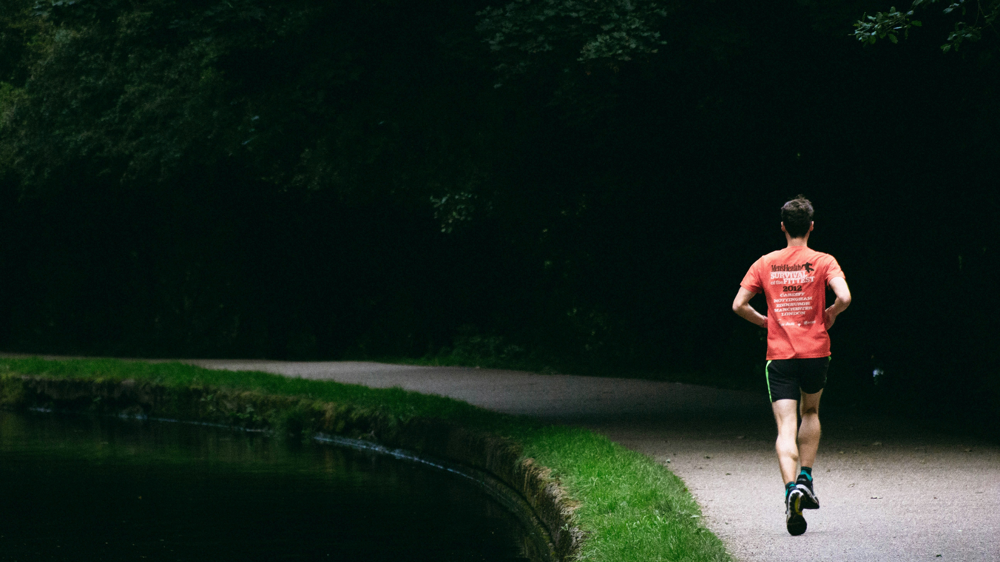
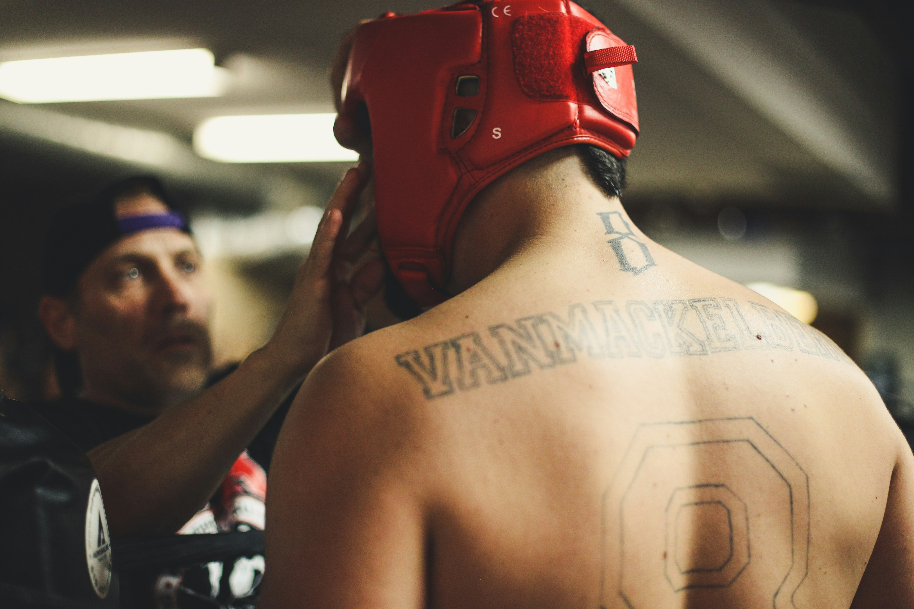

Ben Halil YORMAZ
24 yaşındayım. Yazılım öğrenmeyi seviyorum. Anadolu üniversitesi Bilgisayar Programcılığı Bölümü 1.sınıf öğrencisiyim. kenidimi geliştirmeyi ve iyi özelliklerimi keşfetmeyi seviyorum. Spor yapmayı bir hayat disiplini olarak görüp mümkün olduğu şartlarda aksatmamaya gayret ediyorum. Felsefi kitaplar okumayı seviyorum. En sevdeğim yazarlar; Fyodor Dostoyevski,Emil Cioran, Friedrich Nietzsche gibi yazarlardır.
| BASKETBOL | KOŞU | ,MMA |
|---|---|---|
|
 |  |